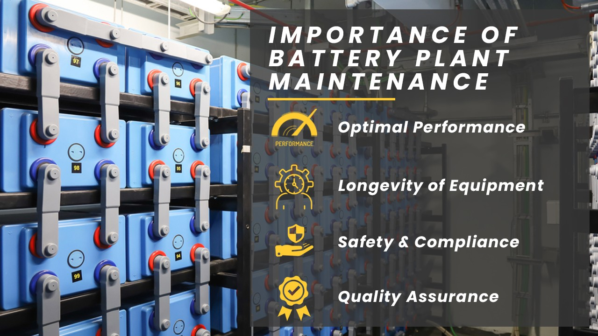
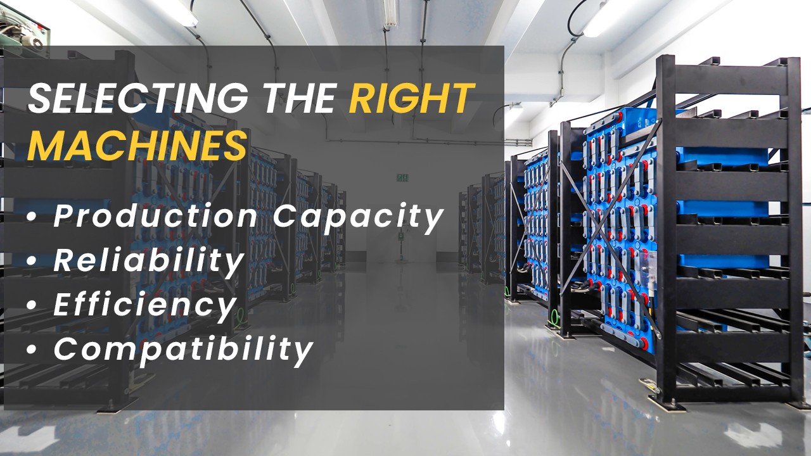
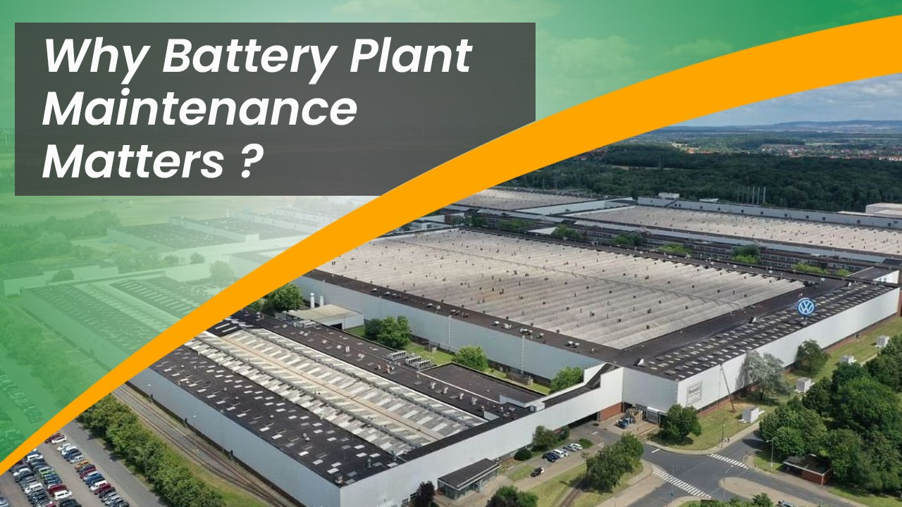
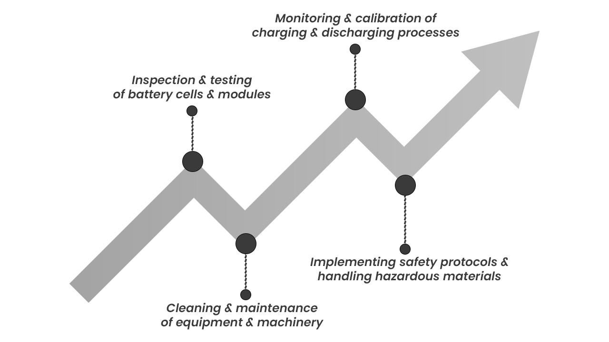
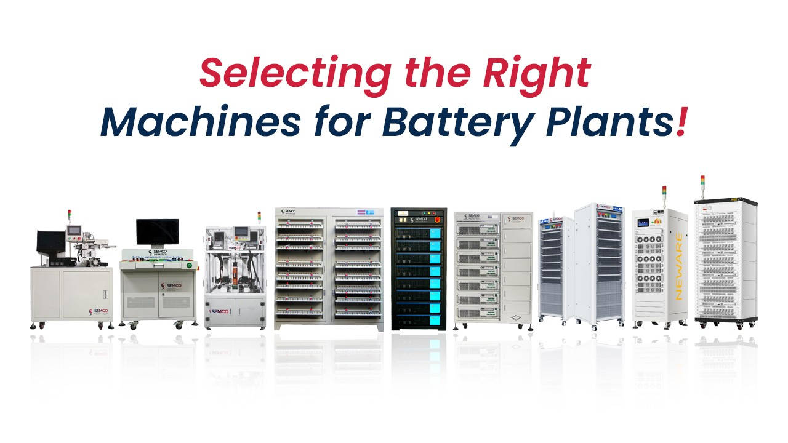
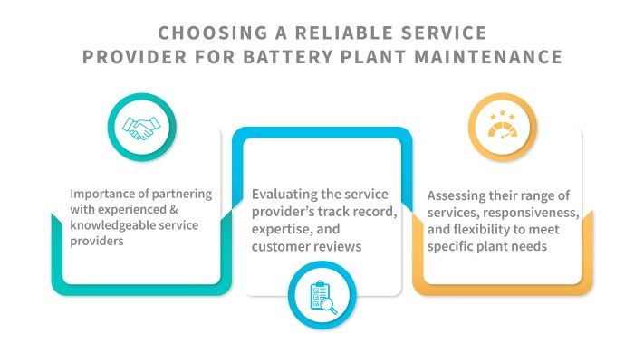
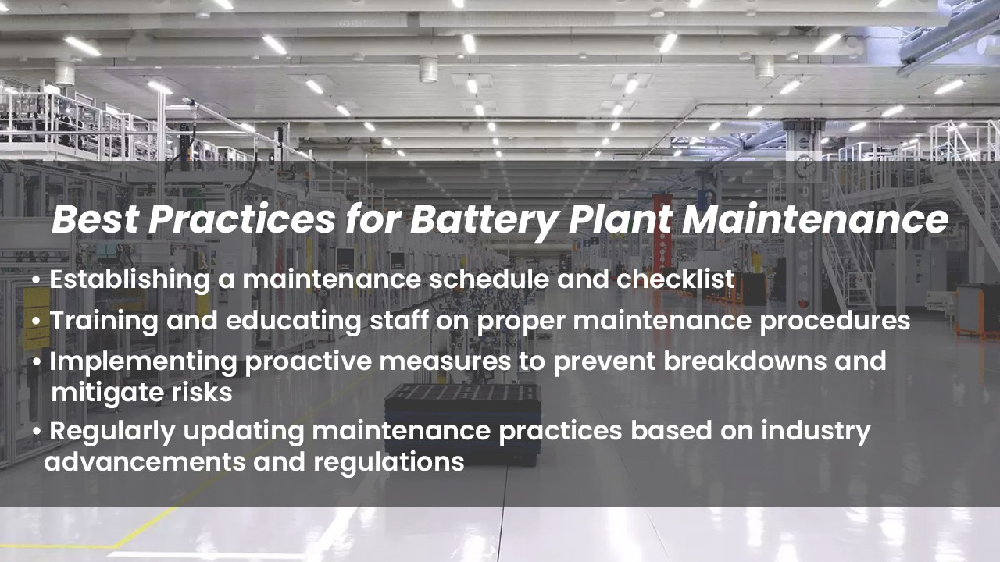
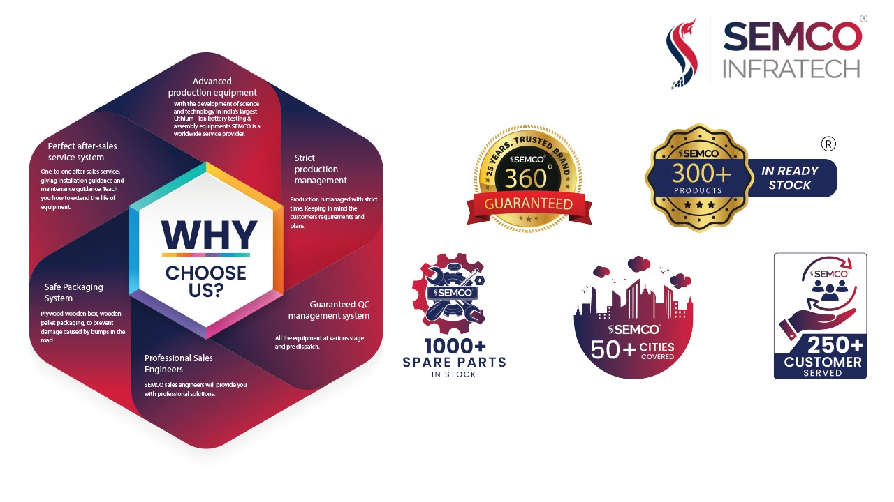

Importance of lithium-ion battery plant maintenance
Battery plant maintenance is of utmost importance to ensure the efficient and reliable operation of battery manufacturing facilities. Regular maintenance helps in maximizing the performance, longevity, and safety of battery plants. Here are some key reasons why maintenance is crucial:

Optimal Performance: Regular maintenance ensures that the machinery and equipment in the battery plant are functioning at their best. This leads to improved productivity, reduced downtime, and consistent quality in battery production.
Longevity of Equipment: Proper maintenance practices help extend the lifespan of machines and equipment, minimizing the need for frequent replacements or repairs. This ultimately reduces costs and enhances the overall efficiency of the plant.
Safety and Compliance: Battery plants deal with hazardous materials and processes. Effective maintenance plays a critical role in ensuring a safe working environment by identifying and rectifying potential safety hazards. It also helps in compliance with industry regulations and standards.
Quality Assurance: Battery plants need to deliver batteries that meet stringent quality requirements. Regular maintenance enables the detection of any issues or deviations in the production process, allowing for timely adjustments and quality control measures.
Selecting the right machines for a battery plant is equally important. Consider the following factors:

Production Capacity: Assess the production requirements of the plant and select machines that can meet the desired output while maintaining efficiency.
Reliability: Choose machines from reputable manufacturers known for their reliable and durable equipment. This helps minimize breakdowns and ensures continuous operation.
Efficiency: Opt for machines that are designed to maximize productivity and minimize energy consumption. Efficiency plays a crucial role in reducing costs and improving overall plant performance.
Compatibility: Ensure that the selected machines are compatible with the specific battery manufacturing processes and technologies used in the plant. This ensures smooth integration and efficient workflow.
Additionally, partnering with a reliable service provider for battery plant maintenance is essential. The right service provider will have expertise in battery plant maintenance, a track record of delivering quality services, and the ability to cater to the unique needs of the plant. They should be responsive, flexible, and well-versed in the latest maintenance practices and technologies.
By prioritizing maintenance and selecting the right machines and service provider, battery plants can enhance their performance, extend equipment lifespan, ensure safety compliance, and deliver high-quality batteries to meet market demands.
Why Battery Plant Maintenance Matters
Regular maintenance is of utmost significance in ensuring the optimal performance and longevity of battery plants. By implementing routine maintenance practices, potential issues can be identified and addressed promptly, preventing them from escalating into major problems. This proactive approach helps to keep the machinery and equipment in prime condition, maximizing their efficiency and productivity. Additionally, regular maintenance minimizes the risk of unexpected breakdowns and costly downtime, ensuring uninterrupted operation and meeting production targets. It also plays a crucial role in extending the lifespan of the equipment, reducing the need for frequent replacements and costly investments. Overall, regular maintenance is key to achieving optimal performance, enhancing the lifespan of battery plants, and maintaining a competitive edge in the industry.

Neglecting maintenance in battery plants can lead to a range of potential risks and consequences. Without regular maintenance, issues such as equipment malfunction, component failure, or production inefficiencies can go unnoticed. This neglect can result in costly downtime, disrupted operations, and missed production targets. Moreover, the safety of the plant and its personnel may be compromised if critical maintenance tasks, such as inspecting and addressing potential hazards, are neglected. Neglected maintenance can also impact the quality and consistency of the batteries produced, leading to customer dissatisfaction and damage to the reputation of the plant. Overall, the consequences of neglecting maintenance can be severe, including decreased productivity, increased costs, safety hazards, and compromised quality, underscoring the crucial importance of regular maintenance in battery plants.
Key Components of Battery Plant Maintenance

Inspection and testing of battery cells and modules
Inspection and testing of battery cells and modules play a vital role in ensuring the quality, reliability, and safety of battery systems. Through thorough inspection, potential defects or abnormalities in the cells and modules can be identified early on, allowing for timely intervention and mitigation of risks. Testing involves assessing various parameters such as capacity, voltage, internal resistance, and performance under different operating conditions. This enables the verification of the battery's functionality, adherence to specifications, and overall health. Rigorous inspection and testing protocols help in identifying any faulty or underperforming cells or modules, ensuring that only high-quality components are utilized in battery assembly. By conducting regular and comprehensive inspections and testing, battery manufacturers can uphold the integrity of their products, deliver consistent performance, and instill confidence in customers regarding the safety and reliability of their battery systems.
Cleaning and maintenance of equipment and machinery
Cleaning and maintaining equipment and machinery are essential to ensuring the smooth and efficient operation of battery plants. Regular cleaning helps to remove dirt, dust, debris, and other contaminants that can accumulate on surfaces and components. This not only improves the overall appearance but also prevents potential damage and malfunctions caused by the buildup of foreign particles. Maintenance involves inspecting and lubricating moving parts, checking for wear and tear, and addressing any issues or abnormalities promptly. By keeping equipment and machinery clean and well-maintained, the risk of breakdowns, equipment failures, and production disruptions is significantly reduced. Furthermore, proper maintenance helps to optimize performance, extend the lifespan of the equipment, and ensure consistent and reliable output. Ultimately, investing time and effort in cleaning and maintenance practices enhances the efficiency, productivity, and longevity of battery plant operations.
Monitoring and calibration of charging and discharging processes
Monitoring and calibration of charging and discharging processes are critical for maintaining the optimal performance and accuracy of battery systems. Continuous monitoring allows for real-time assessment of voltage, current, temperature, and other key parameters during the charging and discharging cycles. This helps to identify any deviations or irregularities that may indicate potential issues or inefficiencies in the battery's operation. Regular calibration ensures that the charging and discharging processes are accurately controlled and aligned with desired specifications. This involves adjusting the charging parameters, such as voltage and current limits, and ensuring precise control of the discharging process. By closely monitoring and calibrating these processes, battery manufacturers can ensure that the batteries are charged and discharged efficiently, maximizing their capacity, performance, and lifespan. It also aids in maintaining consistency, reliability, and safety standards throughout the battery manufacturing and usage.
Implementing safety protocols and handling hazardous materials
Implementing robust safety protocols and proper handling of hazardous materials are paramount in battery plants to ensure the well-being of workers and prevent accidents. Safety protocols encompass various measures, including training employees on safe handling procedures, providing personal protective equipment, and maintaining a clean and organized work environment. Strict adherence to safety guidelines minimizes the risk of incidents, such as chemical spills, fires, or electrical hazards. Additionally, battery plants deal with hazardous materials, such as electrolytes and chemicals, which require careful handling, storage, and disposal. Proper training and protocols for the handling of hazardous materials mitigate the potential health and environmental risks associated with their use. By prioritizing safety protocols and effectively managing hazardous materials, battery plants can create a secure working environment, protect their workforce, and contribute to sustainable and responsible operations.
Selecting the Right Machines for Battery Plants

Identifying the specific requirements and production capacity of the battery plant
Identifying the specific requirements and production capacity of the battery plant is crucial for effective planning and operations. This involves assessing factors such as the type of batteries to be manufactured, desired production volume, market demand, and available resources. By understanding the specific requirements, manufacturers can determine the necessary equipment, machinery, and infrastructure needed to meet production goals. It helps in selecting the right technologies, optimizing production processes, and ensuring efficient resource allocation. Moreover, identifying the production capacity enables manufacturers to estimate costs, plan inventory management, and make informed decisions regarding expansion or scaling operations. By carefully evaluating and understanding the requirements and capacity of the battery plant, manufacturers can streamline operations, improve efficiency, and meet customer demands effectively.
Evaluating the features and capabilities of different machines
Evaluating the features and capabilities of different machines, including battery assembly machines, testing equipment, and packaging machinery, is essential for battery manufacturers. By thoroughly assessing these machines, manufacturers can ensure that they align with the specific needs and requirements of the battery production process. This evaluation involves considering factors such as efficiency, reliability, precision, scalability, and compatibility with the desired battery types. By selecting machines with the right features and capabilities, manufacturers can optimize the assembly process, enhance product quality, and improve overall productivity. It also enables them to stay updated with the latest technological advancements, leading to competitive advantages in the market. Through careful evaluation, battery manufacturers can make informed decisions and invest in the most suitable machines that will contribute to their success and growth.
Considering factors like reliability, efficiency, scalability, and compatibility with the plant's operations
When selecting machines for a battery plant, it is essential to consider factors like reliability, efficiency, scalability, and compatibility with the plant's operations. Reliability ensures consistent performance and minimizes the risk of breakdowns or disruptions in production. Efficiency plays a crucial role in optimizing resource utilization and reducing costs, while scalability allows for future expansion and increased production capacity. Compatibility with the plant's operations ensures seamless integration of the machines into existing processes and workflows. By carefully considering these factors, battery manufacturers can choose machines that align with their needs, enhance productivity, and support long-term growth and success.
Choosing a Reliable Service Provider for Battery Plant Maintenance

Importance of partnering with experienced and knowledgeable service providers
Partnering with experienced and knowledgeable service providers is of paramount importance for battery manufacturers. These providers bring valuable expertise, industry insights, and specialized skills to the table. They possess a deep understanding of battery plant maintenance, equipment servicing, and repair requirements. By leveraging their knowledge and experience, manufacturers can ensure efficient and effective maintenance practices, minimize downtime, and optimize the performance of their battery plants. Experienced service providers are well-versed in the latest industry trends, regulations, and best practices, allowing them to deliver high-quality services and ensure compliance with safety and quality standards. Moreover, their expertise enables them to identify potential issues before they escalate, implement preventive measures, and provide timely solutions. Collaborating with experienced service providers not only enhances the operational efficiency and longevity of battery plants but also provides peace of mind knowing that maintenance is in the hands of trusted professionals.
Evaluating the service provider's track record, expertise, and customer reviews
Evaluating the service provider's track record, expertise, and customer reviews is crucial when selecting a service provider for battery plant maintenance. The track record provides insights into their past performance, reliability, and ability to meet customer expectations. It is essential to assess their experience in servicing battery plants and their track record of successfully completing projects. Expertise in battery plant maintenance is vital as it ensures that the service provider has the necessary knowledge, skills, and resources to handle the specific requirements of battery plants. Additionally, customer reviews and testimonials offer valuable feedback from previous clients, highlighting the service provider's professionalism, quality of work, and customer satisfaction. By thoroughly evaluating these factors, manufacturers can make an informed decision and select a service provider with a proven track record, expertise in battery plant maintenance, and positive customer feedback, ensuring a reliable and efficient partnership.
Assessing their range of services, responsiveness, and flexibility to meet specific plant needs
Assessing the range of services, responsiveness, and flexibility of a service provider is crucial when selecting one for battery plant maintenance. The service provider should offer a comprehensive range of services that align with the specific needs of the plant, including routine maintenance, equipment servicing, repairs, and emergency support. Responsiveness is key as it ensures that the service provider can promptly address any maintenance issues or breakdowns to minimize downtime and production disruptions. Flexibility is also essential, as battery plant requirements may vary, and the service provider should be able to adapt their services to meet specific plant needs. Whether it's accommodating specific scheduling requirements or customizing maintenance plans, a flexible service provider can provide tailored solutions that align with the unique demands of the battery plant. By assessing the range of services, responsiveness, and flexibility, manufacturers can choose a service provider that can effectively meet their maintenance needs, ensuring smooth operations and minimizing downtime.
Best Practices for Battery Plant Maintenance

Establishing a maintenance schedule and checklist
Establishing a maintenance schedule and checklist is essential for effective battery plant maintenance. A maintenance schedule outlines the frequency and timing of maintenance activities, ensuring that they are conducted regularly and consistently. It helps in preventing issues by proactively addressing potential risks and conducting routine inspections, tests, and servicing. A well-designed checklist ensures that all necessary maintenance tasks are systematically followed and documented. It acts as a guide, ensuring that no essential steps are missed during the maintenance process. By establishing a maintenance schedule and checklist, battery plant operators can ensure that maintenance activities are conducted in a timely manner, reducing the risk of unexpected breakdowns, improving equipment reliability, and maximizing overall operational efficiency.
Training and educating staff on proper maintenance procedures
Training and educating staff on proper maintenance procedures is crucial for the effective upkeep of battery plants. By providing comprehensive training, employees gain the knowledge and skills needed to perform maintenance tasks accurately and safely. This includes understanding maintenance protocols, equipment handling, safety guidelines, and troubleshooting techniques. Proper training ensures that staff members are equipped to identify potential issues, conduct routine inspections, and address maintenance needs promptly. It also fosters a culture of responsibility and accountability, where employees actively contribute to the plant's maintenance efforts. Educating staff on proper maintenance procedures enhances efficiency, reduces the risk of errors or accidents, and promotes the longevity of battery plant equipment. By investing in training, battery plant operators empower their staff to maintain the highest standards of quality, safety, and productivity in the maintenance processes.
Implementing proactive measures to prevent breakdowns and mitigate risks
Implementing proactive measures to prevent breakdowns and mitigate risks is essential for the smooth operation of battery plants. By taking a proactive approach, potential issues can be identified and addressed before they escalate into major problems. This involves conducting regular inspections, tests, and maintenance activities to identify any signs of wear, deterioration, or potential failure in equipment and machinery. Additionally, implementing predictive maintenance techniques, such as condition monitoring or using advanced analytics, allows for early detection of anomalies and predictive failure analysis. By analyzing data and trends, potential risks can be identified, enabling timely intervention to prevent breakdowns and optimize equipment performance. Proactive measures also include implementing robust safety protocols, training employees on hazard identification and mitigation, and conducting regular safety audits. These measures help create a culture of proactive risk management, ensuring the safety of personnel and protecting the integrity of the battery plant operations. Ultimately, implementing proactive measures reduces downtime, increases operational efficiency, and improves the overall reliability of the battery plant.
Regularly updating maintenance practices based on industry advancements and regulations
Regularly updating maintenance practices based on industry advancements and regulations is crucial for battery plant operators. The field of maintenance is constantly evolving, with new technologies, techniques, and best practices emerging. Staying updated with these advancements allows operators to improve the effectiveness and efficiency of their maintenance activities. By adopting innovative approaches and leveraging new tools, operators can optimize maintenance processes, reduce costs, and enhance overall plant performance. Additionally, staying abreast of industry regulations and standards ensures compliance and promotes safety in the workplace. Regular updates to maintenance practices also help address evolving environmental concerns and sustainability requirements. By continuously improving maintenance practices based on industry advancements and regulations, battery plant operators can stay ahead of the curve, maximize operational efficiency, and ensure long-term success in a rapidly evolving industry.
Semco Infratech

Semco is a trusted provider of automated lithium-ion battery testing and assembly equipment, calibration services & repair center specializing in comprehensive services for battery plant maintenance. They offer state-of-the-art equipment solutions designed to streamline the testing and assembly processes for lithium-ion batteries. With a focus on automation, Semco's equipment ensures high accuracy, efficiency, and reliability in battery production. Additionally, Semco provides expert maintenance services to ensure the smooth operation and longevity of battery plants. Their team of skilled technicians offers routine inspections, repairs, and optimization services to minimize downtime and maximize productivity. With Semco as a partner, lithium battery plant operators can rely on their cutting-edge equipment and reliable maintenance services to achieve optimal performance and long-term success in the lithium-ion battery industry.
Conclusion
In conclusion, prioritizing maintenance and making informed decisions are crucial for the long-term success of battery plants. By recognizing the significance of regular maintenance, operators can ensure optimal performance, longevity, and safety of their facilities. This includes implementing robust maintenance schedules, selecting the right machines and service providers, and establishing proactive measures to prevent breakdowns and mitigate risks. Making informed decisions involves evaluating specific plant requirements, considering factors like reliability, efficiency, scalability, and compatibility, and staying updated with industry advancements and regulations. By emphasizing maintenance and informed decision-making, battery plant operators can enhance productivity, minimize downtime, maintain product quality, and achieve long-term success in a competitive industry.